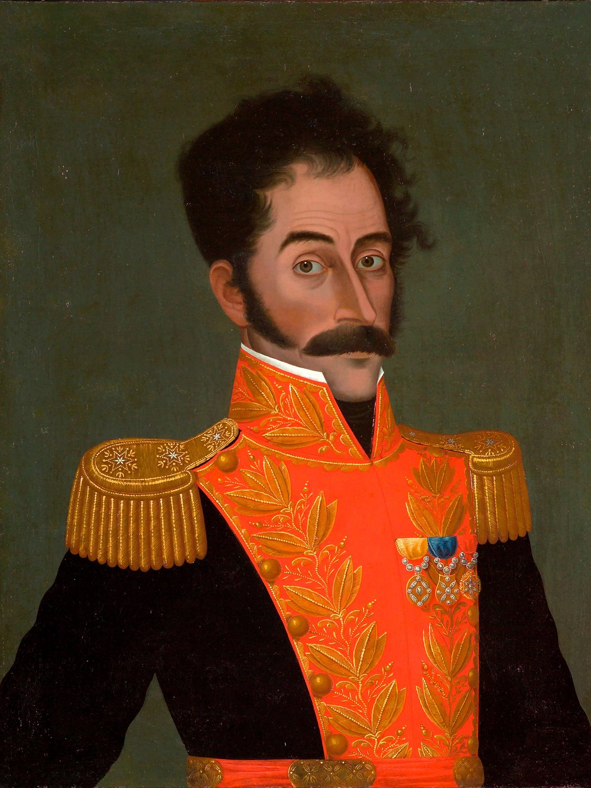
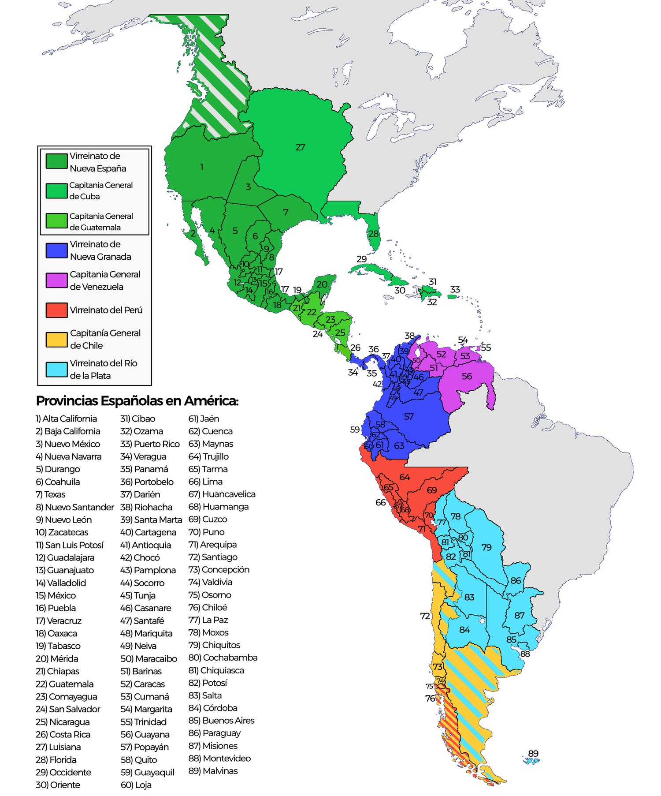
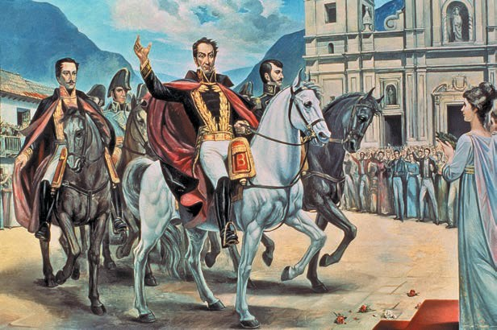
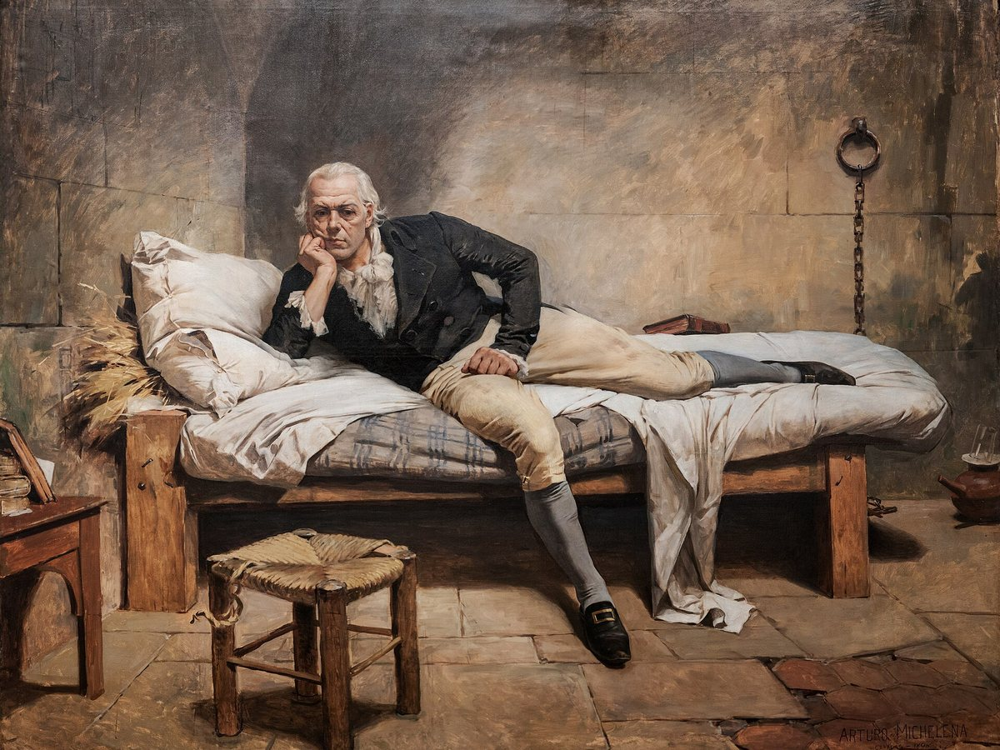
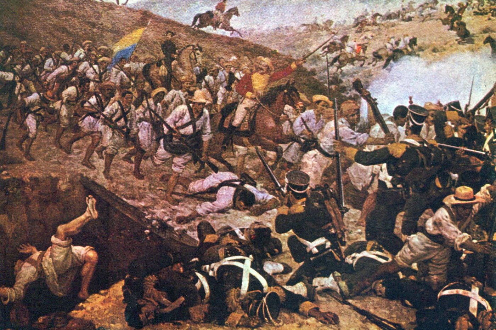
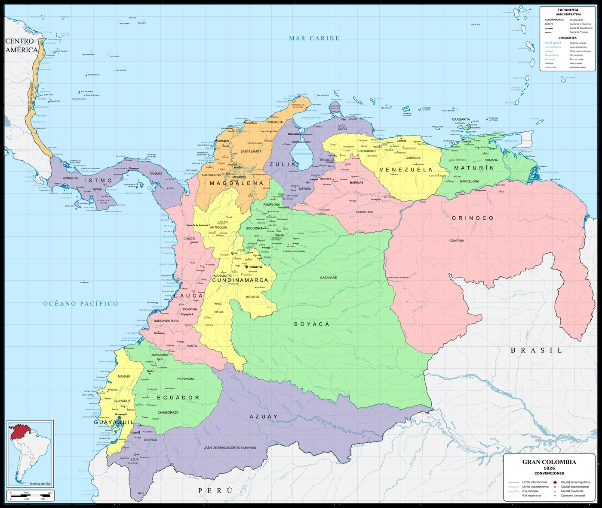
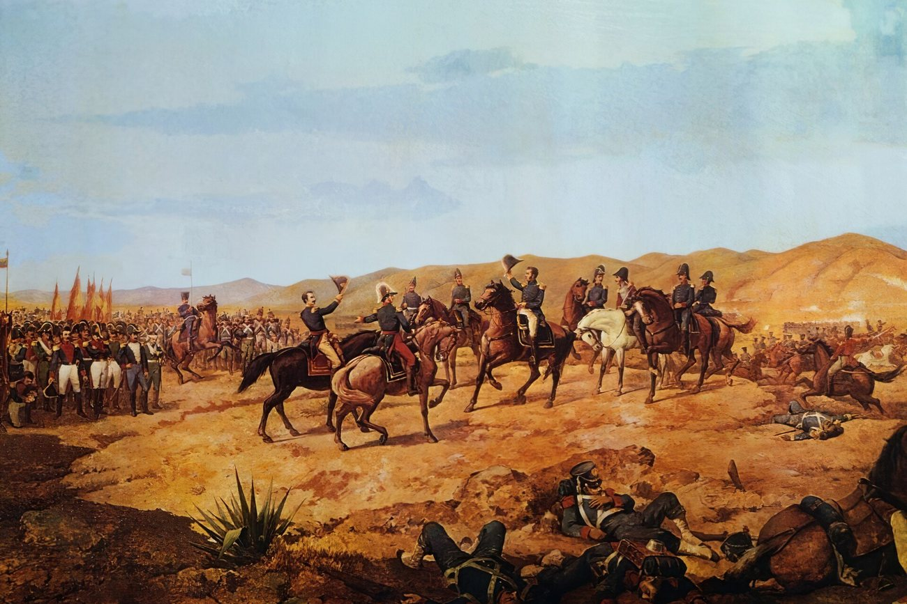
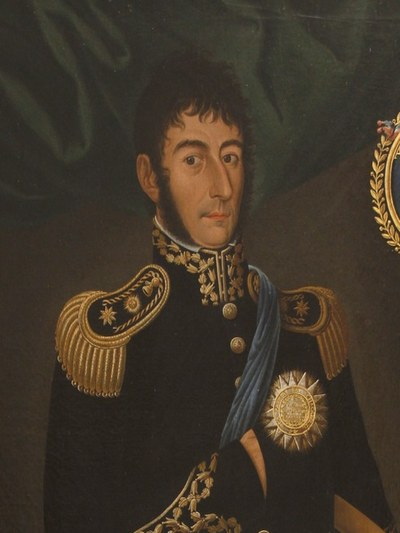
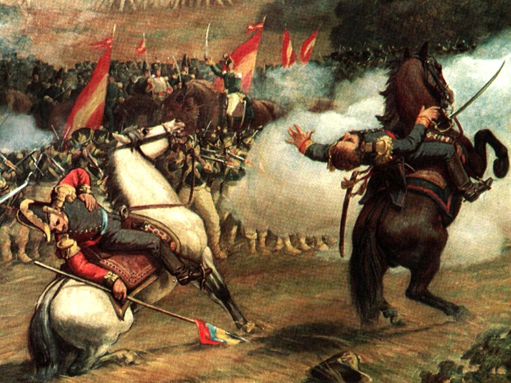
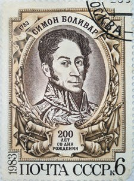

Всеобщая история · 8 класс
Освободитель Южной Америки: как испанские колонии стали независимыми республиками
Стрелки ← → листают слайды
Исторический портрет
Прозвище El Libertador — Освободитель — дали ему соотечественники. Оно осталось в истории и на монетах.
Латинская Америка к 1800 году

Общество и хозяйство
Хозяйство аграрное: латифундии помещиков, труд рабов, индейцев и пеонов-батраков. Свободные скотоводы-гаучо — исключение.

Причины
Программа Боливара укладывалась в одну фразу: «Наша родина — Америка, наши враги — испанцы, наша цель — независимость и свобода!»
Предтеча

Триколор Миранды — жёлтый, синий, красный — до сих пор на флагах Венесуэлы, Колумбии и Эквадора.
1810—1815 · первый этап войны
1816—1819 · второй этап
Переход через Анды стоил армии людей и лошадей, но дал внезапность. Испанцы ждали удара с моря, а не с гор.

1821 год

Столицей республики была Богота, а воевать приходилось сразу на нескольких фронтах — от Карибского моря до Амазонии.
1824 · конец войны


Хосе де Сан-Мартин (1778—1850) — генерал, освободивший юг континента. В 1822 г. он добровольно отошёл от дел и уехал в Европу.
Сравнение
Общее одно: независимость получили, общество не перестроили. Рабство и власть помещиков сохранились почти везде.
1826 · Панамский конгресс
Америка неуправляема. Те, кто служит революции, пашут море.
В 1826 г. Боливар собрал в Панаме представителей молодых республик, чтобы договориться об общем союзе. Работа конгресса закончилась ничем. Вскоре Великая Колумбия распалась на Колумбию, Эквадор и Венесуэлу, а сам Боливар ушёл с политической сцены.
Итоги

Память

Марка СССР к 200-летию Боливара, 1983 г. Его портрет печатали и в стране, которая никогда не была испанской колонией.
Главный вопрос урока
Независимость завоевали креольские элиты. Они заняли места испанцев, но не стали менять общество: рабство, латифундии и бесправие остались.
Долгая война разорила хозяйство. Молодым государствам не хватало денег, заводов и своих рынков.
Место Испании быстро заняли Англия, Франция и США: займы, торговые соглашения, давление. Экономика осталась сырьевой.
Боливар освободил полконтинента и умер в изгнании, так и не увидев единой Америки. Но государства, которые он создал, существуют до сих пор.
Спасибо за внимание
«Наша родина — Америка, наши враги — испанцы, наша цель — независимость и свобода!»
Трунов Михей, 8Э
Источники: Всеобщая история. История Нового времени, XVIII — начало XIX в. : 8 класс : учебник / В. Р. Мединский, А. О. Чубарьян. М. : Просвещение, 2025. § 28. Иллюстрации: Wikimedia Commons, учебник.